Home
Publications
Presentations
Research
Running
Family pictures
My projects are routinely upated at git repo
https://github.com/dauss75/
Globus Genomics
Reproducible big data science:
https://github.com/globusgenomics/genomics-footprint
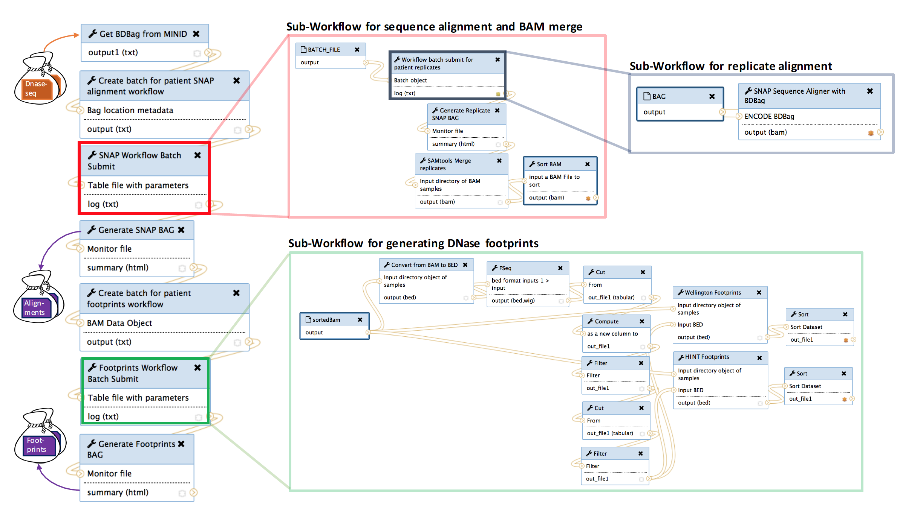
single-cell RNA (10X genomics cellranger galaxy wrapper):
https://github.com/dauss75/galaxy_10xgenomics_single-cell
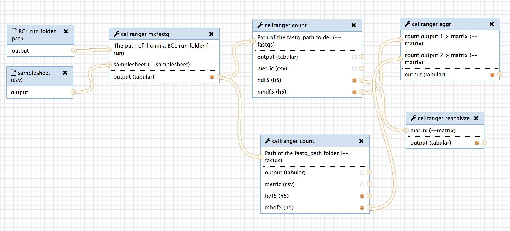
microbiome:
https://github.com/dauss75/microbiome
mouse microarray:
https://github.com/dauss75/mouse_microarray_analysis
<
NGS Analysis
Data discretization
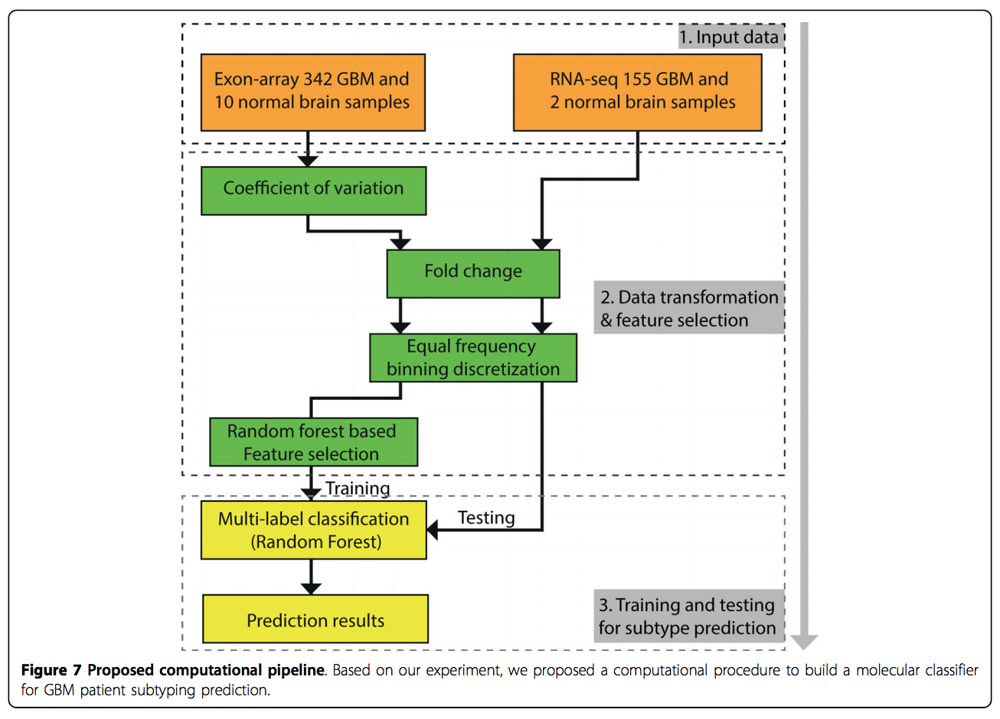
Identification of potential regulatory SNPs for prostate cancer (PCa)
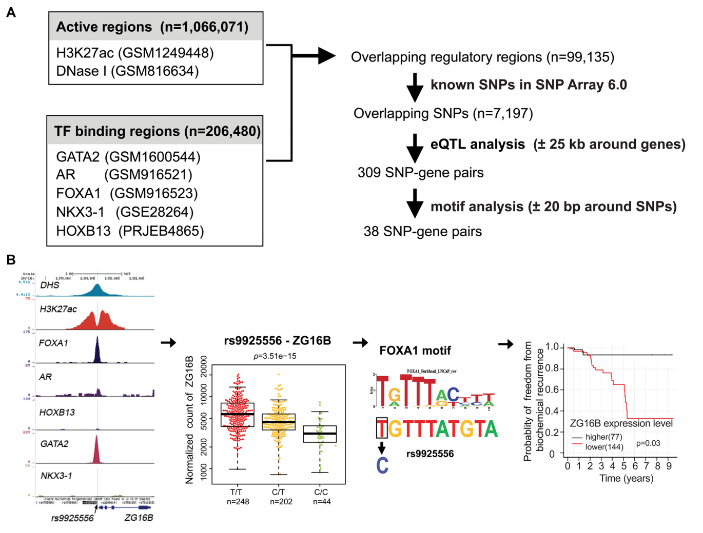
Identify risk SNPs
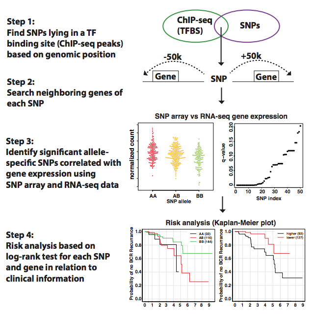
Identifying a significant effect of CpG–SNP pairs on the overall survival
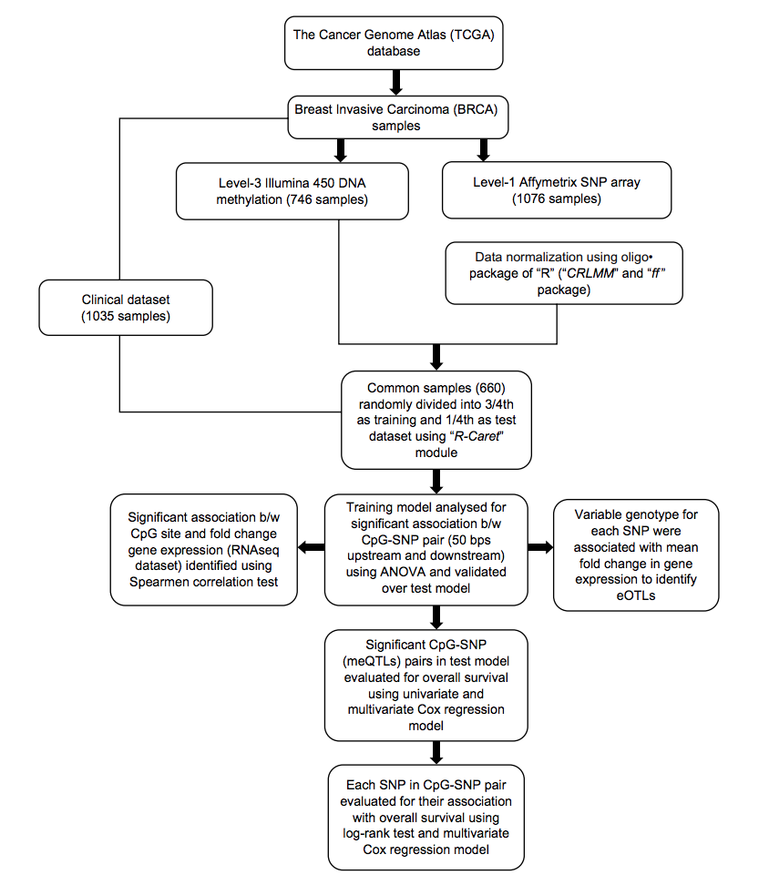
Machine Learning
NBmirTar
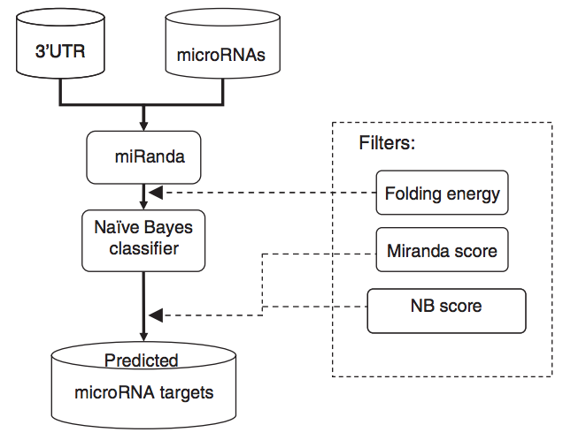
One-class classification
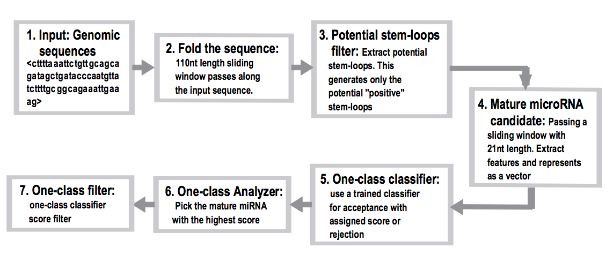
SVM-RCE
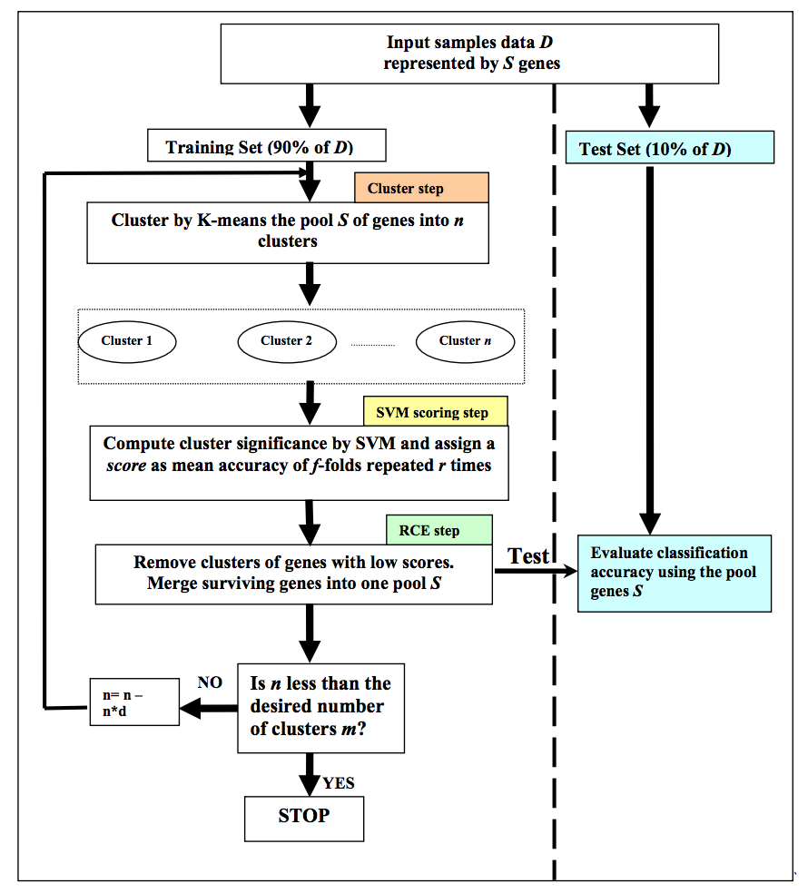
MD simulations for RNA 3D structure
RNA 4-way junction interconversion
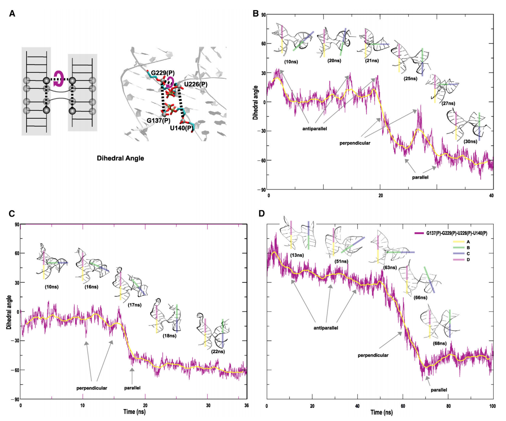
Intramolecular RNA–RNA long-range interactions
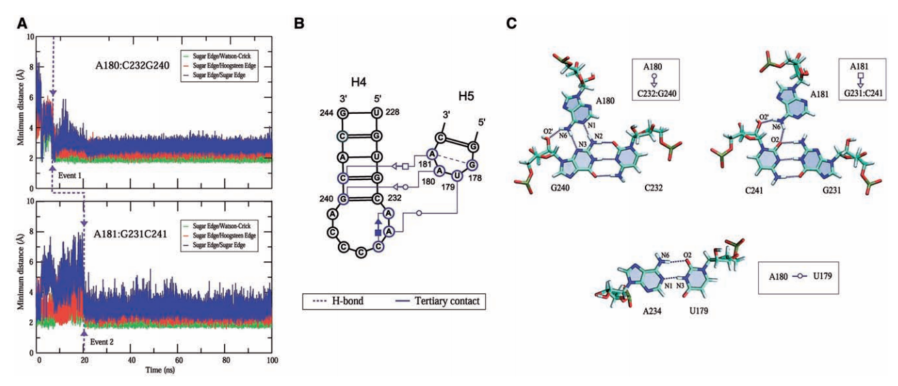
RNA junctions
modeling RNA junctions from 2D to 3D
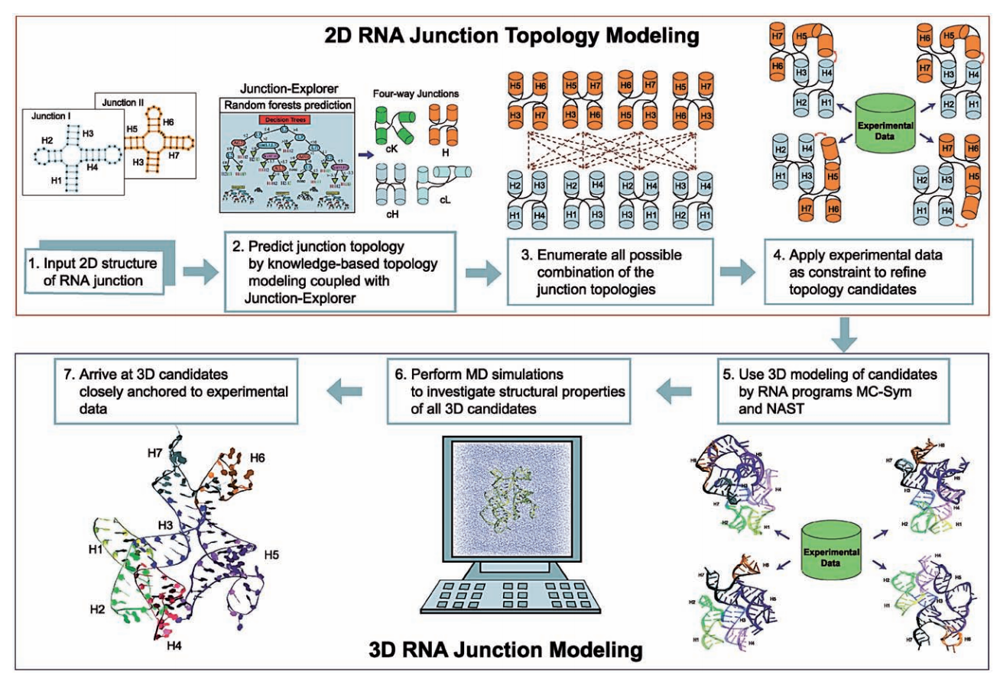
RNA junction to 3D graph
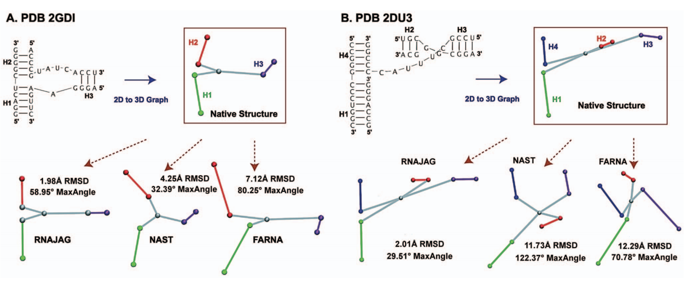